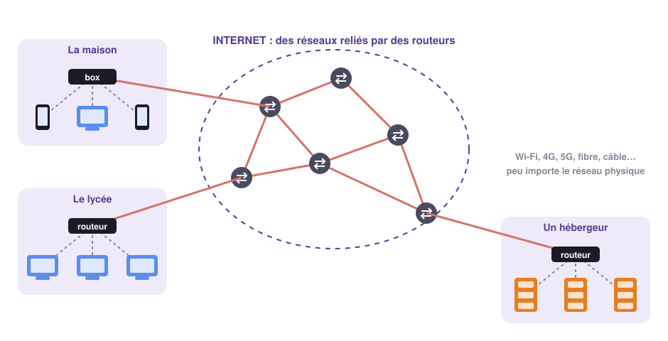
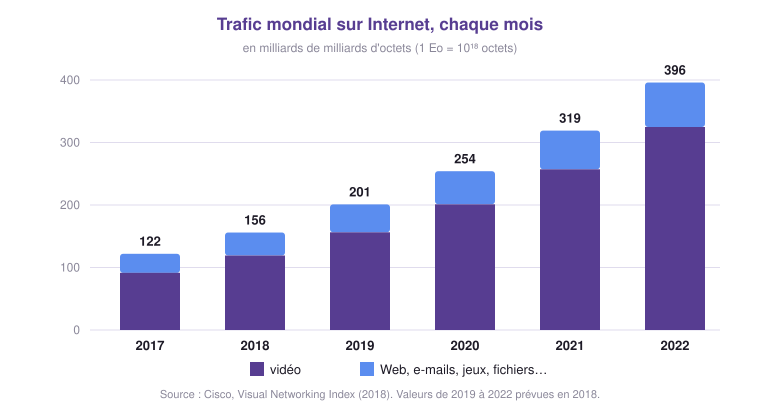
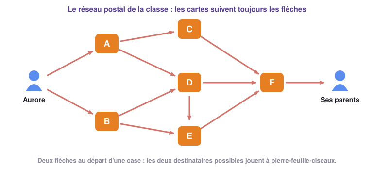
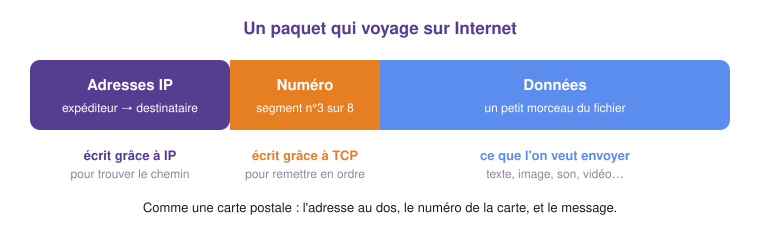
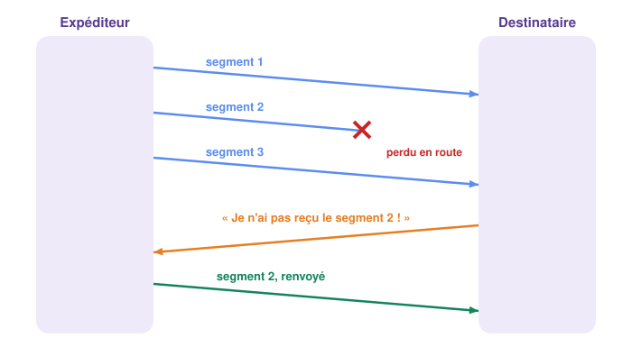

SNT · Thème Internet · Chapitre 1
Des câbles, des ondes, des paquets… et des règles communes à des milliards de machines
Introduction
Un réseau de réseaux : de quoi est-il fait ?
Câbles, ondes et débit.
L'explosion des échanges et la neutralité du Net.
Adresses IP, paquets, routeurs, TCP/IP.
🏛️ Le saviez-vous ?
En 1999, avec l'ADSL à 128 kbit/s, il fallait 1 h 45 pour télécharger 100 Mo, c'est-à-dire une vingtaine de chansons en MP3. Avec la fibre, moins d'une seconde suffit.
SNT · Internet · Chapitre 1 — À la découverte d'Internet
2
Activité 1
À vous de jouer !
Représente Internet tel que tu l'imagines : ce qu'il y a dedans, comment les choses sont reliées, où vont tes messages.
SNT · Internet · Chapitre 1 — À la découverte d'Internet
3
Archive INA · 1996
SNT · Internet · Chapitre 1 — À la découverte d'Internet
4
1
Ce qu'il y a vraiment derrière ton écran
Partie 1 · Internet

SNT · Internet · Chapitre 1 — À la découverte d'Internet
6
Partie 1 · Internet
📘 Définition : Internet
Internet est un réseau de réseaux : il relie entre eux, à l'échelle mondiale, des millions de réseaux plus petits (maison, lycée, entreprise…) et permet à des milliards d'appareils de communiquer.
⚠️ Internet ≠ Web
Internet est le réseau qui transporte les données. Le Web n'est qu'un des services qui l'utilisent, comme la messagerie, les jeux en ligne ou la visioconférence.
SNT · Internet · Chapitre 1 — À la découverte d'Internet
7
⭐ À retenir !
2
Des câbles, des ondes… et un débit
Partie 2 · Réseaux physiques
L'information voyage dans un câble :
L'information voyage par des ondes radio : on parle aussi de liaison hertzienne.
SNT · Internet · Chapitre 1 — À la découverte d'Internet
10
Partie 2 · Réseaux physiques
| Réseau | Filaire ? | Débit (ordre de grandeur) | Usage |
|---|---|---|---|
| Modem 56k | oui | 56 kbit/s | obsolète |
| Bluetooth | non | 2 Mbit/s | casque, montre |
| ADSL | oui | 10 à 50 Mbit/s | box, en voie de disparition |
| 4G | non | 100 Mbit/s | smartphone |
| Wi-Fi | non | 100 Mbit/s à 1 Gbit/s | autour de la box |
| Ethernet (RJ45) | oui | 100 Mbit/s à 1 Gbit/s | ordinateur fixe, console |
| 5G | non | 1 Gbit/s | smartphone |
| Fibre optique | oui | 1 à 8 Gbit/s | box, liaisons entre pays |
SNT · Internet · Chapitre 1 — À la découverte d'Internet
11
⭐ À retenir !
Partie 2 · Le débit
📘 Définition : Débit
Le débit est la quantité d'informations transmise par seconde :
d = q ÷ Δt
🛠️ Méthode : calculer une durée
1 octet = 8 bits · 1 Ko = 1 024 octets · 1 Mo = 1 024 Ko · 1 Go = 1 024 Mo
Film de 2 Go, connexion à 100 Mbit/s :
SNT · Internet · Chapitre 1 — À la découverte d'Internet
13
Partie 2 · Le débit
SNT · Internet · Chapitre 1 — À la découverte d'Internet
14
Activité 2
À vous de jouer !
Elle se demande comment chacun de ses appareils est relié à Internet. Réponds sur ton cahier.
Parmi : câble Ethernet, Wi-Fi, 4G/5G, Bluetooth.
SNT · Internet · Chapitre 1 — À la découverte d'Internet
15
3
Toujours plus de données… surtout de la vidéo
Activité 3

| En France | 2009 | 2019 |
|---|---|---|
| Nombre d'internautes | 30 millions | 57 millions |
| Part ayant un smartphone | 12 % | 81 % |
| Temps sur Internet par jour | 1 h 30 | 4 h 48 |
SNT · Internet · Chapitre 1 — À la découverte d'Internet
17
⭐ À retenir !
Partie 3 · Neutralité du Net
Sur Internet, rien ne distingue à première vue un paquet de vidéo d'un paquet de musique ou d'un e-mail.
📘 Définition : Neutralité du Net
Les fournisseurs d'accès doivent traiter toutes les données de la même manière, quels que soient leur contenu, leur origine ou leur destination : ni ralentissement, ni priorité, ni supplément payant.
Principe fondateur d'Internet, protégé en Europe depuis 2015… mais régulièrement remis en cause.
SNT · Internet · Chapitre 1 — À la découverte d'Internet
19
Activité 4
À vous de jouer !
Essentiel à 10 € : Web, e-mails et réseaux sociaux à pleine vitesse, vidéos limitées en basse qualité. Premium à 25 € : tout à pleine vitesse, et tes plateformes de streaming favorites en priorité.
Chacun prend position, argumente, puis on confronte les avis.
SNT · Internet · Chapitre 1 — À la découverte d'Internet
20
4
Adresses, paquets, routeurs… et TCP/IP
Activité 5 · sans ordinateur

SNT · Internet · Chapitre 1 — À la découverte d'Internet
22
Activité 5 · sans ordinateur
Cartes sans numéros. Les parents les posent dans l'ordre d'arrivée et lisent la phrase à voix haute. Est-ce bien celle d'Aurore ?
Nouvelle phrase, cartes numérotées 1/4 à 4/4. Le professeur confisque une carte en route : les parents demandent à Aurore de la renvoyer.
SNT · Internet · Chapitre 1 — À la découverte d'Internet
23
Partie 4 · Adresse IP
📘 Définition : Adresse IP
Une adresse IP est un numéro qui identifie de façon unique une machine connectée à un réseau.
| Version | Exemple | Nombre d'adresses |
|---|---|---|
| IPv4 | 193.51.24.124 nombres de 0 à 255 | ≈ 4,3 milliards |
| IPv6 | 2001:0db8:0000:85a3:0000:0000:ac1f:8001 | ≈ 3,4 × 1038 |
SNT · Internet · Chapitre 1 — À la découverte d'Internet
24
⭐ À retenir !
C'est moins que le nombre d'humains, et bien moins que le nombre d'objets connectés. Épuisées depuis 2019 en Europe, elles sont peu à peu remplacées par IPv6.
Partie 4 · Paquets
Un fichier n'est jamais envoyé d'un bloc : il est découpé en petits paquets, qui voyagent chacun de leur côté.

SNT · Internet · Chapitre 1 — À la découverte d'Internet
26
Partie 4 · Routage
📘 Définitions : Routeur et routage
Chaque routeur lit l'adresse IP de destination et confie le paquet à un voisin qui le rapproche du but. Le chemin n'est pas fixé à l'avance.
SNT · Internet · Chapitre 1 — À la découverte d'Internet
27
Activité 6
À vous de jouer !
Le nombre affiché dans chaque paquet est son TTL : il diminue de 1 à chaque routeur.
SNT · Internet · Chapitre 1 — À la découverte d'Internet
28
Activité 6
SNT · Internet · Chapitre 1 — À la découverte d'Internet
29
Partie 4 · Routage
📘 Définition : TTL (Time To Live, « reste à vivre »)
Chaque paquet porte un compteur, souvent fixé à 64 au départ, qui diminue de 1 à chaque routeur. Quand il atteint 0, le routeur détruit le paquet.
Pourquoi ? Pour qu'un paquet perdu, qui tournerait en rond entre des routeurs, n'encombre pas le réseau indéfiniment.
SNT · Internet · Chapitre 1 — À la découverte d'Internet
30
⭐ À retenir !
Partie 4 · TCP

Avant l'envoi, TCP découpe les données en segments numérotés. À l'arrivée, il les remet dans l'ordre et redemande ceux qui manquent.
📘 Définition : Protocole
Un protocole est un ensemble de règles communes que les machines respectent pour communiquer, comme une langue partagée.
SNT · Internet · Chapitre 1 — À la découverte d'Internet
32
Partie 4 · TCP
SNT · Internet · Chapitre 1 — À la découverte d'Internet
33
⭐ À retenir !
Activité 7 · sur ordinateur
À vous de jouer !
La commande ping envoie quelques petits paquets à une machine, qui répond à chacun : on mesure le temps d'un aller-retour.
ping qwant.fr. Relève l'adresse IP, les paquets envoyés et reçus, leur taille, les durées minimale, maximale et moyenne.ping www.govt.nz (Nouvelle-Zélande) et compare.ping qwant.fr : obtiens-tu les mêmes durées ? Quelle notion du cours cela illustre-t-il ?SNT · Internet · Chapitre 1 — À la découverte d'Internet
35
⭐ À retenir !
TCP/IP n'offre pas de garantie temporelle : on ne sait pas combien de temps mettra un paquet.
Bilan
À vous de jouer !
Douze exercices, du plus simple au plus difficile. La correction est vérifiée avec le professeur.
tracert jusqu'en Nouvelle-Zélande (ordinateur)SNT · Internet · Chapitre 1 — À la découverte d'Internet
37
Bilan
À vous de jouer !
Un QCM de 12 questions, corrigé automatiquement.
SNT · Internet · Chapitre 1 — À la découverte d'Internet
38
Bilan
SNT · Internet · Chapitre 1 — À la découverte d'Internet
39